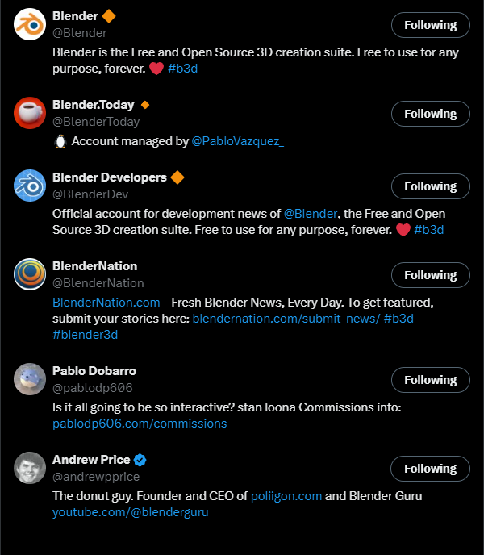
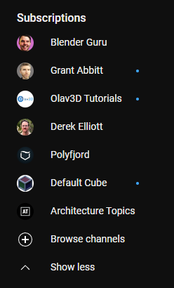

Qu’est-ce que la veille Technologique ?
La veille technologique est une routine qui consiste à surveiller les évolutions techniques, les dernières innovations dans un secteur d’activité désiré par celui qui la met en place.
Pourquoi faire une veille technologique ?
La veille permet de ne pas prendre de décisions obsolètes, d’éviter de réinventer ce qui est déjà existant, d’améliorer ses compétences d’anticiper et de s’informer des nouvelles technologies dans son domaine d’activité, de nouveaux brevets, processus, concepts.
Comment faire une veille ?
Pour assurer une veille technologique on peut demander à ses collègues de travail, assister à des conférences/webinaire écouter des podcasts. Cependant, Bien que ce sont des bons moyens à ne pas négliger pour se tenir au courant des nouvelles technologies d’un domaine donné, cela demande que l’on aille de nous-mêmes vers les sources d’information et pour cela on peut utiliser des moyens qui nous permettrons d’avoir l’information sans même à avoir la chercher. Et ce via des flux RSS tel que Google alert ou feedly qui, à l’aide de mots clés, nous recherchera des articles avec des sujets contribuant à notre veille technologique. Il y a également les réseaux sociaux, Twitter/X, Linkedin. Les plateformes de vidéo en ligne que le géant Youtube. Des newsletters, Ou bien même des abonnements à des magazines.
Des erreurs à éviter durant la mise en place d’une veille technologique
Il faut faire attention et trier ses informations car certaines peuvent être inutiles ainsi que mettre à jour ses sources au cas où l’on souhaiterait changer de domaine ou s’informer sur autre chose.
Quel est le but d’une veille technologique ?
Enfin, l’objectif d’une veille est d’analyser, d’anticiper et agir en fonction de ce que l’on a appris les actions mises en place à partir des informations récoltées peuvent permettre de se démarquer en mettant en place de nouveaux procédés, pouvant diminuer les coûts et en améliorant la qualité de son travail.
Le sujet de ma veille technologique
Pour ma veille technologique, j'ai choisi le logiciel Blender qui est un logiciel de modélisation 3D gratuit et open source ayant gagné beaucoup
de popularité durant ces dernières années.
Par conséquent, il y a énormément de ressources disponibles sur internet.
J'ai pour hobby la modélisation 3D et je me suis dit que je pouvais faire une pierre deux coups en utilisant cette veille technologique pour trier les nombreuses informations disponibles sur le web ainsi qu'être au courant des dernières technologies.
Pour ce faire j'ai utilisé plusieurs outils en commençant par me créer un nouveau compte google qui sera dédié et cette veille technologique et aux autres à venir.
Je voulais éviter de mélanger mes informations personnelles et professionnelles avec les informations de cette veille technologique.
Ensuite, je me suis créé un compte Feedly et utilisé Google alerts qui sont des flux RSS qui vont me permettre de suivre le sujet de mes veilles technologiques.
Puis, j'ai recherché des newsletters au sujet des dernières actualités de Blender et j'en ai sélectionné quelques-unes (thisweekin3D,blendernation).
Après, je me suis créé un compte Twitter/X où j'ai suivi plusieurs comptes.
Enfin, je suis parti sur Youtube et je me suis abonné à des chaînes actives et/ou influentes sur le sujet.
Flux RSS
Feedly
Feedly est un flux RSS qui me permet de recevoir automatiquement des nouvelles sur les sujets de mon choix en utilisant des mots-clés.
J'ai mis pour mot clé "Blender" et je reçois tous les jours des articles, des vidéos, des tutoriels et autres au sujet de blender. (img1)
J'ai la possibilité de mettre à lire plus tard les articles qui m'intérressent et les lires quand j'ai le temps dans la journée (img2)
Google Alerts
À l'instar de Feedly, Google Alerts est un flux RSS qui me permet d'obtenir des nouvelles sur les sujets de mon choix via des mots-clés.
Google Alerts s'occupera de trouver des résultats pertinent sur google en fonction de ces derniers.
J'ai mis pour mot clé "blender 3D" et "geometry nodes" (mécanique de blender). (img 3 et img 4)
Newsletters
Je me suis abonné à deux newsletters. Blender Nation qui me recommande des articles sur leur site tous les jours(img 5).
Ainsi que thisweekin3D par Andrew Price qui me recommande des articles une fois par semaine.
J'ai créé un compte X/Twitter pour suivre des grosses figures de la communauté 3D (img 6).
Youtube
Je me suis abonné à plusieurs chaines youtubes sur le sujet (img 7).
